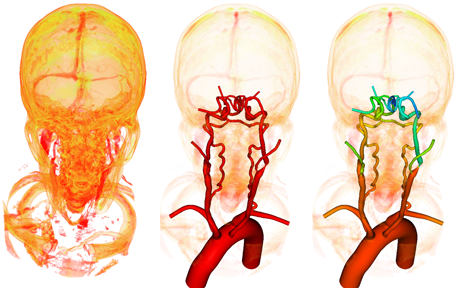

a machine learning approach to segment CT and MR images

Patient-specific hemodynamic simulations have become an important part of cardiovascular research. These simulations depend on construction of anatomically accuraate 3D geometric models of cardiovascular structures, in most cases using medical image scans (CT/MR) of the appropriate region. In the case of blood vessels, the model construction pipeline is time-consuming and costly, dependent on mutliple manual inputs from trained experts. The typical pipeline consists of
1) construction of pathlines through vessels of interest,
2) 2D lumen segmentations along the pathlines, and
3) lofting segmentations together and joining branches into a single unified 3D model (see Figure below).
The objective of this project is to automatically trace (construct pathlines) and construct a 3D model piece by piece, and thereby saving researchers and clinicians percious time and work necessary.
We approach this problem locally, processing only a small segment of a blood vessel at a time. Using a seed point to initialize tracing, a subvolume around the blood vessel segment is extracted, segmented using deep learning neural networks, processed into surface mesh representation, from which a centerline is extracted and used to determine the next point to move to, see Figure X. In the case of a bifurcation, other centerline branches are stored in queue for subsequent tracing, after the current branch has been traced down.
See Figure below for a movie of automatic tracing and segmentation of expansive vasculature using a single seed point for initialization.
Image borrowed from here.